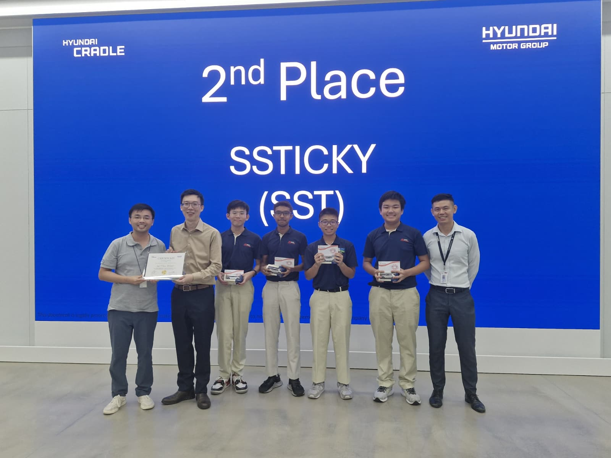

My Projects

2025
WRO Future Engineering Robot
An autonomous vehicle engineered for obstacle navigation and computer vision tasks...
Read Details →
2025
HMGICS TechBot
A smart logistics and automated sorting system built for industrial simulation...
Read Details →